These are renders, not mock-ups. The physics behind each one is specified in docs/physics-model.md and the choices are recorded in the decision log; what you are looking at is that model's output at the fidelity the roadmap has reached.
Clips are re-encoded for the web — H.264, 720 px, CRF 34 — from originals that run to 163 Mbit/s. The grain is the sensor model, not the compression.
The same flight, modelled both ways
The 30-minute quadrotor mission of quad_flight_clear_noon.yaml, filmed twice at the same instants from the same camera. Left: the airframe solver, one temperature for the whole aircraft. Right: four patched surfaces, every cell holding its own energy balance. Over the whole mission the object-wise aircraft moves 0.5 K — it simply tracks the air — while the deck alone moves 16.6 K and runs up to 29.9 K away from it.
This is the defect the project exists to fix: one temperature per object is not a coarser picture of a thermal scene, it is a different scene.
Engine-free: the camera rays are intersected with the quadrotor's own rectangles in NumPy, producing the instance-id and world-position planes Isaac supplies from its AOVs, and those go through the same point bridge the renderer uses. The body shells are unpatched, so they keep the per-prim value in both panels — patch what you author, and the rest of the prim stays as it was.
Made by scripts/quad_flight_pointwise.py
The same arm, as a tube
ADR 0087 could only model a quadrotor arm as a flat strip, and recorded a tube as a permanent limit. WM.1–WM.7 lifted it: a Warp closest-point query derives the (face, u, v) from the position AOV, cells live on the mesh, and a scene config can now declare one. Below is the north arm unrolled — the tube cut along its underside and laid flat, angle across, length down — over the same 30-minute mission. 15.4 K between the sunlit crown and an underside close to air, where the same arm as a patched strip carries under a millikelvin across its width. The dark band at the far end is the motor pod's shadow, traced per cell by WM.4; the gradient is as smooth as it is because WM.6 lets the tube conduct round itself, which the fin equation says costs a quarter of an unconducted one. It read 26.6 K before either.
{kind=link}
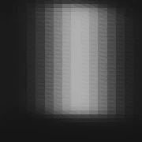
{kind=link}
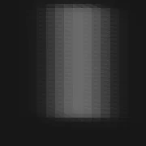
{kind=link}
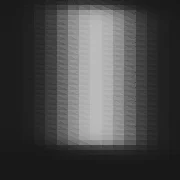
Made by scripts/quad_flight_mesh.py
Through the camera: Isaac Sim, four bands
The same geometry, weather, sun and instant through four spectral bands. A quadrotor is four hot spots against a cold sky in LWIR and a black silhouette against a bright sky in NIR — two different detection problems, which is the argument for treating bands as data rather than code. Exposure is per band and is physics: a daylight reflective-band scene saturates a low-light exposure by around 120×.
A light aircraft passing overhead — the engine bay and exhaust against sky.
{kind=link}
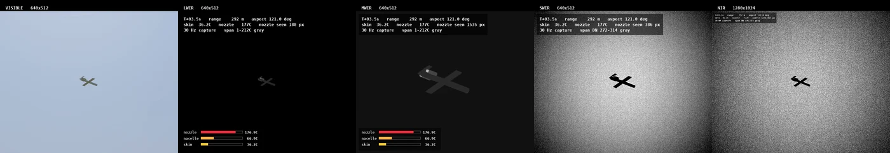
Made by scripts/render_multiband.py
A heavy-lift quadrotor, four bands
30-minute mission, clear midday, 105 px across the span at 20 m: four hot motor bells, warmer speed controllers and a warm pack, which is what a thermal sensor actually keys on in a drone.
{kind=link}
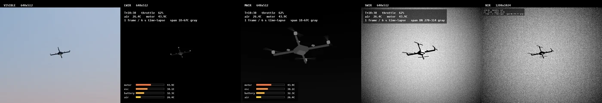
Made by scripts/render_multiband.py
A vessel on open water, four bands
Sea-reflected sky, angular emissivity of water and glint. The maritime lane is the owner's second target after aerial (ADR 0003, ADR 0078).
{kind=link}
Made by scripts/render_maritime_demo.py
A point target against sky, four bands
The aerial point-target lane: a small target against a clear sky at dawn, where the sky's radiance-versus-elevation gradient is the whole background. These four are pre-AGC, mapped from radiance directly.
{kind=link}
Made by scripts/render_aerial_demo.py
A car that starts its engine
The owner's second requirement: an engine must warm the metal around it, not only itself (ADR 0087/0088/0089). The bonnet here is one USD prim, 23 × 19 cells — flat to under a millikelvin in frame 0 and 5.82 K across at the end of this 29.5-minute run, which is 116 NETD of structure that a per-prim bridge has a single number to represent. Behind it the engine bay has risen 26.4 K and the exhaust pipe 47.7 K over air.
Two scenes run the same §6.6 heat-source node on the same load profile and differ only in the sky, which is how the occlusion term is separated from a scale factor: the road patch opens nearly three times wider under a clear sky than under overcast, while the bonnet moves the other way, because the skin radiates to that sky too.
The wheels do not warm, and the readout says so: §6.6 makes tyre heating flexing work and brake heating kinetic energy, and a car idling in a car park is doing neither. A test pins +0.000 K so a later change cannot quietly "fix" it.
Made by scripts/render_car_ignition.py
A vessel departure, filmed in LWIR
A coaster leaving from 250 m while its funnel warms from cold alongside toward cruise power, played as a time lapse. The film shows what a static frame cannot: the target's signature getting stronger while the target gets smaller. Over the clip below the funnel runs 32 → 92 °C while the range goes 250 → 994 m and the hull falls from 99,077 to 3,792 pixels — a factor of 26 in area. That is the regime an infrared search set actually works in.
The camera does not track, so the vessel climbs through the frame as its depression angle shrinks from 4.6° to 1.2°, crossing the sea's own angular gradient: it starts against near water at about the sea surface temperature and ends against far water that is mostly warm air.
The funnel had to be repainted. It was bare_aluminium, ε = 0.09 in LWIR, so it reflected the cold sky far more than it radiated and the renderer drew a 155 °C funnel as a dark rectangle. Real funnels are painted steel, ε ≈ 0.9. A test now pins the two emissivities, because the mistake is invisible in the geometry and shows up only in the picture.
An imported asset, flown
A 62 MB third-party DJI Phantom 4 Pro FBX that nobody here modelled: 41 prims, 2,486,459 triangles, 41 of 41 materials resolved in Kit through configs/assets/phantom4.yaml. It flies a figure-of-eight from 4.6 m to 10.3 m range — 70 to 157 px across the span — and the display spans −12.0 to 26.4 °C.
Solved point-wise it is the first scene in the project whose geometry was not authored in Python: 234,923 cells over 0.1628 m², and the physics the lane exists for — black mouldings reach 65.9 °C where the white shell tops out at 33.8 °C (α 0.94 against 0.25), every surface carrying a span rather than one value per object.
Made by scripts/render_phantom4.py
A low pass, where aspect is the variable
A light business jet passing a ground sensor at 150 m/s, 300 frames of real time at 30 fps, closing to 250 m. The variable is aspect, not throttle: the exhaust nozzles are hidden behind their own nacelles from the front and fully exposed from the rear, which is why a real aircraft's measured infrared signature varies by a large factor around the clock. Measured off the instance-id plane at the same range either side of closest approach, this run shows 190 px of nozzle tail-on against 78 head-on. The display spans 1.1 to 190.9 °C, which is the nozzle setting the top of it.
A jet's hot part is a fortieth of its span across, so unlike the quadrotor's motors you never resolve it: it is a near-point source, bright because it is hundreds of kelvin hot rather than because it is large.
Made by scripts/render_aircraft_pass.py
Focus, and what a defocused edge does
A two-cube scene at Boson 640 optics, filmed through a focus sweep. Each depth layer is blurred with the kernel its own range earns and composited back to front using its blurred coverage as alpha, so a defocused edge is semi-transparent rather than a hard cut. The blur is applied in radiance, never in Kelvin (non-negotiable #3) — a test pins the half-covered edge to the radiance-blended temperature rather than the Kelvin mean, 6.7 K apart on a 250/315 K edge.
{kind=link}
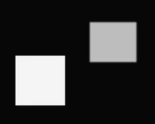
{kind=link}
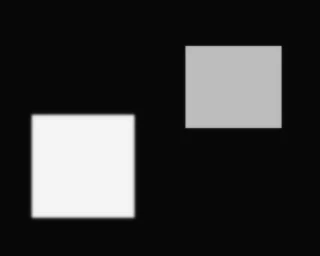
{kind=link}
Point-wise physics: every cell its own temperature
These are engine-free frames — a synthetic G-buffer over each patch's own plane, passed through the same point bridge the Isaac path uses, so the pixels are exactly what a render would carry before the radiometry.
PT.9 — the aerial scenario, regenerated point-wise. The quadrotor in plan at four phases of the mission. The deck is one prim carrying its own field; each arm spans 29 K across the deck's and the motor pods' shadows. The scene this replaces held the whole airframe at one number.
{kind=link}
{kind=link}
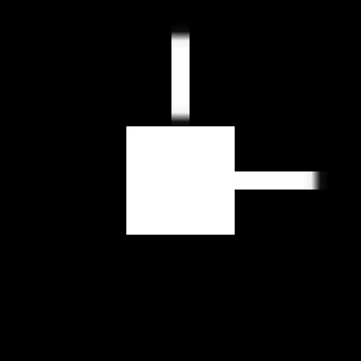
{kind=link}
{kind=link}
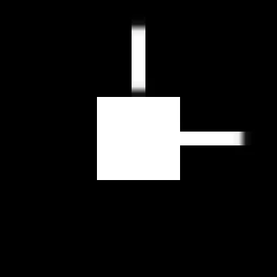
Made by scripts/quad_flight_pointwise.py
PH.3 — still water as a region of a patch
One road prim, one patch, one solve. 20 mm of standing water over the western half, a wall's shadow across the southern rows. The puddle opens 3.8 K below the road and is 11.0 K below an hour later, having lost 0.85 of its 20 kg m⁻² . In the shade the same water is only 2.4 K below — evaporation is driven by each cell's own temperature, which a constant wet-is-colder offset cannot reproduce.
{kind=link}
{kind=link}
TC.7 — the exhaust line as a gas stream in a wall
The line under a car, manifold at the left and tailpipe at the right, three instants on one common scale. Running: 425 °C at the downpipe falling to 128 °C through the silencer, with the hangers showing as cold bands where they conduct into the body. The shielded manifold reads cooler than the bare pipe behind it, which is what a camera under a car actually sees.
{kind=link}
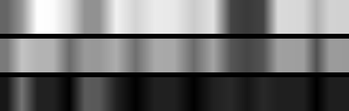
PT.21 — per-cell sky view factor
How much sky each cell can see, black 0.0 to white 1.0, on the street-canyon scene. The roof sees the open hemisphere; a wall sees half of it; the ground between the buildings runs from 0.99 in the open to 0.00 in the alley. This scales the diffuse solar and the longwave down together, which is why a shaded cell is not merely un-sunlit.
{kind=link}
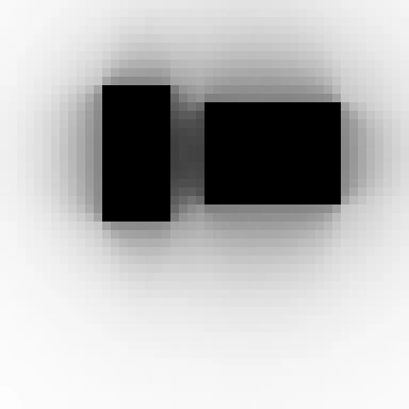
{kind=link}
{kind=link}
PT.15 — the cabin, solved with its panels
A saloon in plan at 10:00. The cabin is a lumped member of the same solve as its five panels: it reaches 68.7 °C against 26.2 °C of air, and the roof runs 1.6 K over the adiabatic bonnet because it is the one panel the cabin is heating from behind.
{kind=link}
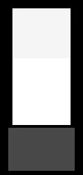
Made by scripts/parked_car_cabin.py
PT.20 / PT.22 — occlusion from geometry
One building's west wall with a neighbour's shadow across it: the lit concrete stands 9.7 K over the shaded concrete, and half an hour after the shadow lifts the once-shaded half is still 8.1 K behind. The step is thermal history, not a shading mask applied to the image.
{kind=link}
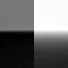
Made by scripts/wall_half_in_sun.py
Flat-field correction, and what it leaves behind
The same scene recaptured with and without a flat field applied. Fixed-pattern structure is what a viewer reads as "thermal camera" long before radiometric accuracy is noticeable, which is why the noise chain (ADR 0053–0057) is modelled rather than approximated with Gaussian noise.
{kind=link}
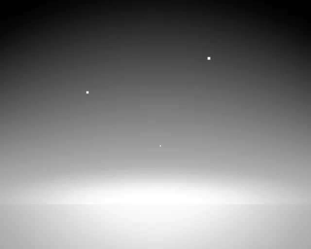
{kind=link}
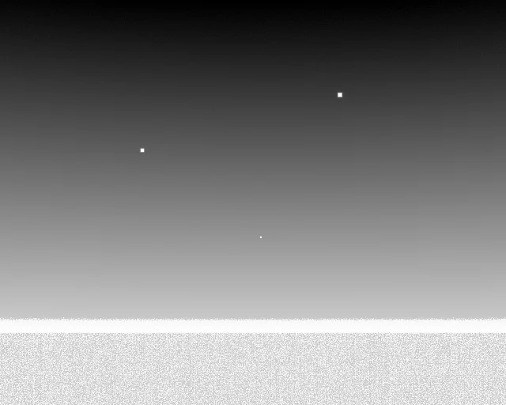
{kind=link}
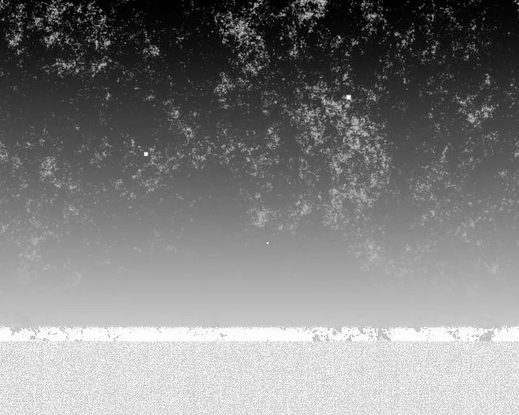